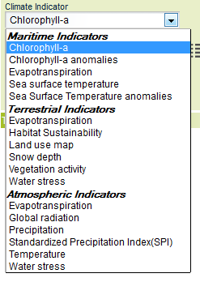
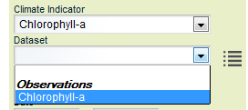
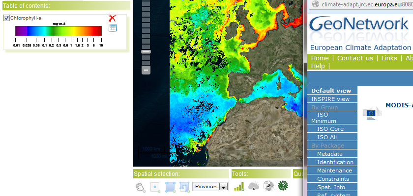
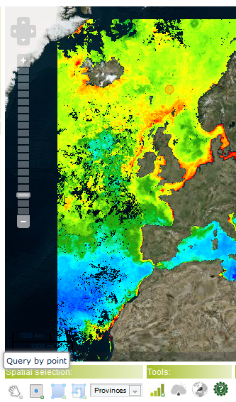
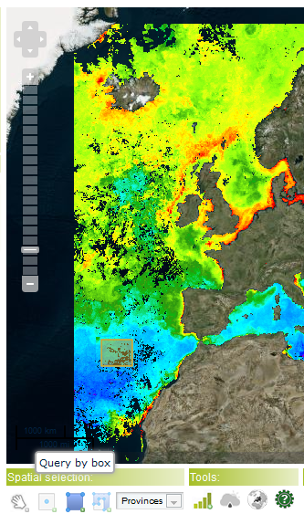
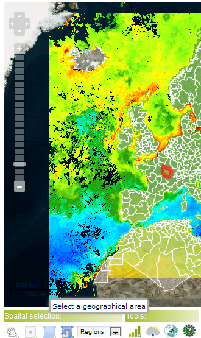

 
to display on the map:

| Query by Point (left mouse-click over the map) |
Query by Box (left mouse-click over the map; drag the mouse and release left-mouse button) |
Query by Geographical Area (left mouse-click over a geographical area) |
|  |  |  |
The system will start automatically the time series over the feature selected.
- Stop button
- Refresh button
 , to stop the graph generation;
, to stop the graph generation;
 , to refresh the graph generation;
, to refresh the graph generation;